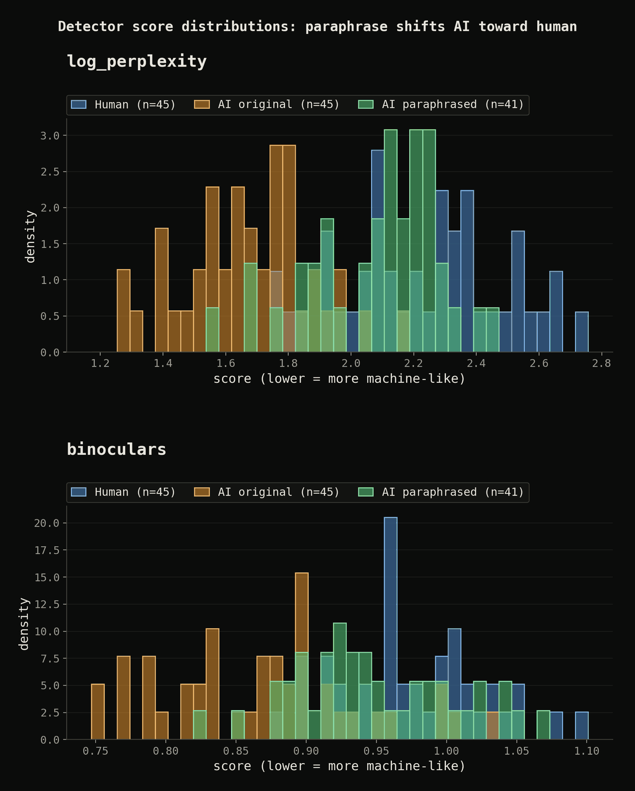

marking the machine: the arms race over ai-generated text
watermarking, detection, and the cheap paraphrase that breaks both. with a small local experiment to feel the collapse.
- Two families. Watermarking embeds a hidden signal at generation time (Kirchenbauer's green-list, Google's SynthID-Text). Post-hoc detection analyzes finished text with no help from the generator (DetectGPT, Binoculars, GPTZero, OpenAI's dead classifier). Watermarking is far stronger but covers only a cooperating model's output; detection is universal but error-prone.
- Both share one weak spot: a paraphrase. Krishna et al. dropped DetectGPT from 70.3% to 4.6% true-positive rate at 1% false-positive rate. Sadasivan et al. proved a matching bound: as models improve, even the best possible detector trends toward a coin flip.
- The detectors fail unsafely. They do not just miss AI text, they misaccuse humans, and the cost lands hardest on non-native writers (61.3% false-positive on TOEFL essays in one Stanford study). OpenAI killed its own classifier; Vanderbilt switched off Turnitin's.
- Watermarking has a worse failure mode: spoofing. For under fifty dollars an attacker can reverse-engineer a watermark and forge it, stamping the provider's signature onto content they never produced.
- The institutional bet has shifted to provenance (a signed record of where a file came from and how it was edited): C2PA / Content Credentials, cryptographic signing at creation. It answers "where did this come from?" not "is this fake?" It works better for images than text, and only when creators cooperate.
- Regulation is forcing that cooperation: the EU AI Act's Article 50 (machine-readable marking from August 2026) and China's dual-label rules (in force since September 2025), while US momentum reversed when EO 14110 was revoked in January 2025.
- I ran a small local experiment to feel the collapse: generate AI text with four Ollama models, build two zero-shot detectors, break them with a paraphrase. Results below.
why bother marking text at all
Three reasons people want to know whether text came from a machine, and they pull in different directions.
The first is academic integrity, the loudest because it is the most personal. A teacher with a stack of essays wants a yes/no answer about each one, and this is the worst possible setting for the technology: the texts are short, the stakes for the accused are high, and a single false positive is a real harm to a real student.
The second is disinformation: bot-written propaganda, fake reviews, fake-grassroots threads, synthetic news at volume. The use here is less about judging one document than flagging patterns at scale, where you can tolerate per-item error if the aggregate signal holds.
The third is the quietest and possibly most consequential: model collapse. If the next generation of models trains on a web filled with the previous generation's output, quality degrades, and reliable provenance keeps the training corpus clean, a motive that belongs to the labs themselves and part of why Google has invested where others have not.
These motives set different reliability bars. The disinformation and corpus-hygiene cases can live with probabilistic, aggregate signals; the classroom case cannot, and yet it is where the tools get sold hardest and fail worst.
how watermarking actually works
A watermark is a deliberate, hidden bias introduced while the text is generated; only someone who knows the secret can read it, and detection is a statistical test against a known rule.
The foundational scheme is Kirchenbauer et al.'s "A Watermark for Large Language Models," from a University of Maryland group at ICML 2023 [1]. Before each token is generated, a hash of the preceding token seeds a pseudorandom split of the vocabulary into a "green list" and a "red list," and during sampling the scheme adds a small constant bias to the green tokens' logits (a "soft" watermark, preferred over a "hard" variant that forbids red tokens, because it preserves quality on low-entropy text). Detection needs no model access: a party who knows the rule counts the green tokens and tests against the null hypothesis that the text was written without knowledge of it. Human text hits green tokens at chance rate, watermarked text far more often, and the open-source detector works from a fairly short span.
The state of the art in deployment is Google DeepMind's SynthID-Text, published in Nature in October 2024 [2]. It uses a cleverer embedding called Tournament sampling, running candidate tokens through a multi-layer knockout where the higher pseudorandom g-value survives each layer, so the watermark is a bias toward high-g tokens. What makes it notable is the scale: it can be configured as non-distortionary, provably preserving the model's output distribution, and Google reports it live in Gemini since May 2024, with no detectable quality difference in user feedback across roughly 20 million responses [2]. It was open-sourced and folded into Hugging Face Transformers [3], and is, to my knowledge, the only text watermark shipping at industrial scale.
The contrast with OpenAI is the central tension of the field. OpenAI has confirmed it built a text watermarking method but is taking a "deliberate approach" to releasing it, accurate against localized tampering like light paraphrasing but less robust against global tampering such as translation or rewording through another model [4]. The cited "99.9% accuracy" figure and the survey claim that around 30% of ChatGPT users would use the product less come from Wall Street Journal reporting, not an OpenAI statement, and I flag them as such. Its stated reasons to withhold are revealing: risk of disproportionate impact on non-native English speakers, and trivial circumvention by motivated bad actors. Same technology, opposite call.
Every watermark shares two structural weaknesses, both of which Google states about its own system [3]: it only works on text from a model whose owner chose to watermark it, excluding every open-weight and malicious model, and it degrades on low-entropy text (code, terse factual answers) where there is no room to bias generation.
the detectors that need no watermark
If you cannot count on the generator, you work backwards from the finished text. This is post-hoc detection, where most commercial products live and most of the failures happen.
The oldest signal is perplexity: language models, by construction, produce more predictable (lower-perplexity) text than human writing. GPTZero, built by Princeton undergraduate Edward Tian and launched January 2, 2023 [5], pairs perplexity with "burstiness," the sentence-to-sentence variation in complexity. Its accuracy is contested, and it is notorious for false positives on non-native writers.
DetectGPT, from a Stanford group at ICML 2023, is more principled [6]. Its hypothesis is that machine text sits in negative-curvature regions of the source model's log-probability surface, so it perturbs the passage and compares log-probabilities; a large drop implies machine generation. It reached 0.95 AUROC (a 0-to-1 separation score where 1 is perfect and 0.5 is a coin flip) detecting GPT-NeoX fake news against 0.81 for the strongest prior baseline, but is white-box and compute-heavy, needing the source model's log-probabilities plus a separate perturbation model.
The strongest training-free detector I know of is Binoculars, from Hans et al. at ICML 2024 [7]. Its insight is to divide one model's perplexity by a cross-perplexity, how surprising a second model's predictions are to the first, using a Falcon-7B / Falcon-7B-Instruct pair. The ratio cancels much of the noise that defeats raw perplexity: over 90% detection of ChatGPT text at a 0.01% false-positive rate, beating GPTZero and Ghostbuster in their tests [7]. Even Binoculars admits its limits: it reliably catches only models similar to its scoring models, memorized human text can be misclassified as machine, and it has no adversarial robustness [7].
The cautionary tale is OpenAI's own AI Text Classifier, launched January 31, 2023 [8]. On a challenge set it correctly flagged only 26% of AI-written text while mislabeling 9% of human text as AI, and OpenAI called it "not fully reliable" and withdrew it on July 20, 2023, citing its low rate of accuracy [8]. The company that builds the models could not reliably detect their own output, which should temper confidence in any commercial detector with a slick dashboard and a green checkmark.
the attack that breaks everything
The attack that turns this into an arms race the defender is losing is a paraphrase, almost trivially cheap.
The canonical result is Krishna et al., "Paraphrasing evades detectors of AI-generated text, but retrieval is an effective defense," at NeurIPS 2023 [9]. They built DIPPER, an 11-billion-parameter paraphraser, and ran AI text through it; against DetectGPT, the true-positive rate at a 1% false-positive rate (the share of AI text caught while only 1% of human text is wrongly flagged) fell from 70.3% to 4.6% [9]. That is not a degradation but a collapse: a detector catching seven in ten now catches fewer than one in twenty, and the text still means the same thing. Even retrieval-based detectors built to survive paraphrase can be significantly degraded by recursive (iterated) paraphrasing [9][10].
The broadest statement of the problem is Sadasivan et al., "Can AI-Generated Text Be Reliably Detected?", in TMLR [10]. Empirically, a light paraphraser breaks the whole family: watermarks, neural classifiers, and zero-shot methods alike. Theoretically, they prove a bound tying the AUROC of the best-possible detector to the total-variation distance between the human and AI distributions, so as models improve and that distance shrinks toward zero, even the optimal detector's AUROC collapses toward 0.5, random guessing [10]. A sufficiently good model is, in the limit, undetectable.
That result is often overstated. Chakraborty et al. rebut that Sadasivan's impossibility holds only when the human and AI distributions overlap across their entire support [11]; as long as the two are not identical everywhere, detection is "almost always possible" given enough samples or a long enough sequence. The honest framing is a sample-complexity tradeoff: better models push the amount of text you need higher, potentially beyond what any single short document can provide. Which lands us where it hurts, because the texts society most wants to judge, a student essay or a tweet, sit in the hardest regime.
Watermarks resist paraphrase a little better than classifiers, but only a little. The Maryland group that built the green-list watermark found that after strong human paraphrasing the watermark is still detectable after roughly 800 tokens on average at a 1e-5 false-positive rate, because paraphrases leak fragments of the original [12]. The catch is the token budget: short outputs fall below that threshold and evade cleanly. Independent audits of SynthID-Text reach the same verdict, robust against trivial edits but degrading sharply under deliberate paraphrase or translation [13]. It deters lazy evasion, not a motivated adversary.
Spoofing is worse than evasion: it fabricates evidence rather than hiding it. Jovanovic, Staab, and Vechev showed at ICML 2024 that by querying a watermarked API you can reverse-engineer the secret rules for under fifty dollars [14]. Against one popular configuration they achieved over 80% success at spoofing, generating text, including harmful content, that the detector attributes to the legitimate provider, and the same stolen watermark boosted scrubbing success from around 1% to over 80% [14]. The mechanism that proves provenance can be forged to manufacture false provenance, framing a person or company for words they never wrote.
The failure that does the most day-to-day damage is the false positive. Liang et al. at Stanford, in Patterns, found a 61.3% average false-positive rate when seven detectors were run on TOEFL essays by non-native English speakers, while US eighth-grade essays were classified accurately with near-zero false positives [15]. All seven detectors unanimously misflagged 19.8% of the human TOEFL essays, and at least one flagged 97.8% of them, because non-native writing has lower linguistic diversity that looks like machine text. The damning part is how easily it inverts: prompting an LLM to "enrich vocabulary" cut the false-positive rate from 61.3% to 11.6% [15], leaving the detectors simultaneously discriminatory and trivially gamed. Vanderbilt disabled Turnitin's AI detector in August 2023, noting that even a claimed 1% false-positive rate implies roughly 750 of its 75,000 annual papers wrongly flagged [16], and The Markup documented students at Johns Hopkins and Miami University forced to prove their innocence from draft history, with international students facing scholarship loss and visa-threatening suspension [17]. The burden of proof inverts: the accused must disprove a machine.
the experiment: does it survive a paraphrase?
I wanted to feel this collapse rather than just cite it, so I ran a small, fully local test to reproduce the shape of the finding with no external services.
The corpus is 90 passages, topic-matched so the subject itself is not a hidden giveaway: 45 human extracts from Wikipedia articles (CC BY-SA) and 45 AI passages generated on the same topics by four local Ollama models (qwen2.5:7b, llama3.1:8b, mistral:7b, gemma2:9b), spread across the four to avoid keying on any single model's style. Markdown is stripped and whitespace normalized first, so the detector cannot cheat on formatting.
I implemented two zero-shot detectors, scored through models separate from the generators. The first is a log-perplexity baseline, the classic GLTR/DetectGPT-family signal where AI text tends to score lower. The second is Binoculars, the perplexity-over-cross-perplexity ratio from Hans et al. [7], here using a lightweight Qwen2.5-0.5B / Qwen2.5-0.5B-Instruct scorer pair to keep it laptop-runnable; the small scorers cost some absolute AUROC against the paper's Falcon pair, but the relative collapse, which is the finding, still shows. Every AI passage is then paraphrased by a different local model than the one that wrote it, while the human passages are untouched, and the detector must still flag the rewritten AI text. I measure AUROC and the true-positive rate at fixed 1% and 5% false-positive rates, computed twice per detector, AI-original-versus-human and AI-paraphrased-versus-human, each with a bootstrap 95% confidence interval (1000 resamples).
My expectation going in was the literature's prediction: clean separation before the attack, then a sharp drop after paraphrase, with the plain-perplexity baseline collapsing harder than Binoculars [9][10]. That was a hypothesis, not a result.
The separation was there before the attack. The log-perplexity baseline reached an AUROC of 0.96 (95% CI 0.92 to 0.99) telling AI-original from human, and Binoculars reached 0.90 (0.82 to 0.95). At a strict 1% false-positive rate, both caught 60% of the AI passages: with topic matched out, even a tiny local detector flags raw model output most of the time.
Then I ran the paraphrase, and both detectors fell apart. Log-perplexity dropped from 0.96 to 0.65 AUROC (0.53 to 0.76); Binoculars dropped from 0.90 to 0.65 (0.54 to 0.77). An AUROC of 0.65 is closer to a coin flip (0.50) than to the 0.95-plus you would want before acting on a flag. The true-positive rate is the number that should worry anyone deploying this: at a 1% false-positive rate, detection of AI text fell from 60% to roughly 10% for both detectors, and at a more lenient 5% false-positive rate the log-perplexity baseline fell from 82% to 10% and Binoculars from 69% to 15%. A single pass through another local model, no DIPPER, no fine-tuning, no human editing, took detectors that caught most machine text down to about one passage in ten, the same shape as the 70.3% to 4.6% collapse Krishna et al. report [9], reproduced on a laptop.
Two things surprised me, and both cut against my own expectation. First, the strong detector did not beat the weak one: with a 0.5B scorer pair, Binoculars scored slightly below the plain perplexity baseline before the attack and landed in the same place after it, because its paper edge comes from much larger scorers. Second, the collapse was symmetric: I had expected perplexity to crater while Binoculars degraded more gracefully, but both converged on the same near-useless AUROC, because the attack moves the text itself toward the human distribution and does not care which statistic you compute.

After paraphrase, the AI text is not hiding from the detector so much as it has, by the only measure the detector has, become human.
The caveats are real. Small-n means wide confidence intervals, especially on the 1% false-positive tail, and the small scorer pair makes my absolute numbers undershoot the published Falcon results. Modern models may have memorized some Wikipedia text, which biases toward easy detection and therefore makes the post-attack drop a conservative lower bound, not an overstatement. None of those change the direction, which is the point.
provenance instead of detection
If detection is a race the defender cannot win, the pragmatic move is to stop racing, and the field's name for that is provenance. Detection estimates whether finished content is fake; it is probabilistic, degrades as generators improve, and is vulnerable to evasion and spoofing. Provenance instead attaches a verifiable, cryptographically signed record of origin and edit history at the point of creation, and that record travels with the file. It does not ask "is this fake?" but "where did this come from, and what was done to it?"
The standard is C2PA, the Coalition for Content Provenance and Authenticity, with "Content Credentials" as the consumer-facing brand. It was co-founded in February 2021 by Adobe, Arm, BBC, Intel, Microsoft, and Truepic, merging Adobe's Content Authenticity Initiative and the Microsoft/BBC Project Origin, and operates under the Linux Foundation [18]. The mechanics are honest cryptography: at creation, each asset is hashed and signed into a tamper-evident manifest recording assertions like the tools used, the date, and the edits applied, using standard public-key infrastructure, so the consumer trusts the signer's identity, not the pixels [19]. If content is altered after signing, the hash no longer matches and any compliant viewer flags it. The Content Authenticity Initiative is candid that this is not a fakeness detector: it describes Content Credentials as "a kind of nutrition label for digital content," notes that detection tools "can be unreliable," and states the credentials "aren't intended to prescriptively indicate whether a piece of content is 'real'" [19]. Provenance proves who signed and what changed; it does not prove truth, and absence of a credential proves nothing.
Provenance helps images more than text, for a physical reason. An image carries a lot of bits, so a manifest can be embedded and, in "durable" implementations, paired with a pixel-domain watermark that survives re-encoding. Text is information-sparse and trivially retyped; copy the words into a new document and every signed bit is gone. This is why SynthID spans image, audio, and video as well as text, those watermarks embedded into pixels or audio samples that survive routine transforms, while the text watermark remains the weakest member of the family [3]. Google reports SynthID has marked over 10 billion pieces of content as of May 2025, which I cite as vendor-stated, and has launched a detector portal for its own watermarks [20].
The limit provenance and watermarking share is cooperation: both rely on the generator choosing to mark its output, and neither touches content from a model whose owner did not opt in or where the metadata was stripped. But "cooperating" is everything, which is why the next move is regulatory.
the policy layer
Law is now being used to manufacture the cooperation the technology assumes, and three regimes disagree about how hard to push.
The most concrete is the EU AI Act, Article 50 [21]. Providers of generative AI must ensure outputs are "marked in a machine-readable format and detectable as artificially generated or manipulated," using solutions "effective, interoperable, robust and reliable as far as is technically feasible." Deployers must disclose AI-generated deepfakes, and AI-generated text on matters of public interest unless a human took editorial responsibility. The application date is August 2, 2026 [22]. That "as far as is technically feasible" clause does quiet, heavy work: the lawmakers know the technology is imperfect and wrote the imperfection into the obligation.
The US went the opposite direction. Executive Order 14110, signed by Biden on October 30, 2023, tasked NIST and Commerce with content-authentication and watermarking guidance [23]. NIST delivered: NIST AI 100-4, "Reducing Risks Posed by Synthetic Content," published November 20, 2024, framing content authentication, provenance tracking, and detection as a layered system rather than competing options [24]. Then the politics reversed: EO 14110 was revoked by President Trump on January 20, 2025, within hours of inauguration, and replaced days later by "Removing Barriers to American Leadership in Artificial Intelligence" [23]. The NIST report still stands as published guidance, but the federal mandate behind US watermarking policy has cooled sharply, and anyone presenting EO 14110 as live policy in 2026 is simply wrong; it is history.
China went furthest. The Cyberspace Administration of China released its "Measures for Labeling AI-Generated Synthetic Content," plus a mandatory national standard, on March 14, 2025, in force since September 1, 2025 [25]. The requirement is dual: explicit labels (visible text or graphics) and implicit labels (an embedded watermark or metadata carrying the provider's name and a content identifier), and distribution platforms must check content for these markers before release and flag suspected unlabeled AI content [26]. Three regulators, three philosophies: the EU mandates machine-readable marking, China mandates visible and embedded labels plus platform checks, and the US, for now, mandates nothing.
my reasoned close
After working through the literature and watching my own detectors fold under a one-line paraphrase, here is where I land.
Detection of AI text, as a yes/no verdict on a single short document, is not a solvable problem, and we should stop selling it as one. The theory says the optimal detector trends toward chance as models improve [10]; the practice says a free paraphrase already gets you most of the way there [9]; and the failure mode is not a harmless miss but an affirmative false accusation landing on the people least able to defend themselves [15]. A tool both ineffective against the motivated and discriminatory against the innocent has negative value in a classroom, so OpenAI was right to kill its own classifier, and the institutions that switched off Turnitin's were ahead of the curve.
Watermarking is genuinely better, and SynthID-Text is a real engineering achievement: unnoticeable, quality-neutral, shipping at a scale no one else has matched. But its honest use is as a deterrent against lazy reuse and a corpus-hygiene tool for the labs, not forensic proof in an adversarial setting; it breaks under paraphrase on short text, covers only cooperating models, and the spoofing result means it can manufacture false evidence as readily as prove true provenance. Provenance is the most defensible bet, precisely because it is the most modest: it does not claim to detect anything, only to offer a signed, checkable origin record from creators who chose to sign, honest that absence of a signature means nothing. It will work better for images than text for as long as text remains a few kilobytes you can retype in a minute, an asymmetry that is probably permanent.
The realistic end state is layered, exactly how NIST framed it [24]: durable provenance where it can be established, embedded watermarking where the generator cooperates, and detection only as a low-confidence backstop that no one's career or grade should ever hinge on. The honest sentence to put on any AI-text verdict is the one the field keeps trying to avoid: we cannot be sure. Refusing to admit that, especially in school policy, is how you get a student forced to prove a negative against a machine that was wrong 61% of the time on people who write like them. I would rather ship the uncertainty than launder it behind a green checkmark.
// references
- Kirchenbauer, Geiping, Wen, Katz, Miers, Goldstein. "A Watermark for Large Language Models." https://arxiv.org/abs/2301.10226
- Dathathri et al. (Google DeepMind). "Scalable watermarking for identifying large language model outputs." Nature, 2024. https://www.nature.com/articles/s41586-024-08025-4
- Google / Hugging Face. "Introducing SynthID Text." https://huggingface.co/blog/synthid-text
- TechCrunch. "OpenAI says it's taking a 'deliberate approach' to releasing tools that can detect writing from ChatGPT." https://techcrunch.com/2024/08/04/openai-says-its-taking-a-deliberate-approach-to-releasing-tools-that-can-detect-writing-from-chatgpt/
- Wikipedia. "GPTZero." https://en.wikipedia.org/wiki/GPTZero
- Mitchell, Lee, Khazatsky, Manning, Finn. "DetectGPT: Zero-Shot Machine-Generated Text Detection using Probability Curvature." https://arxiv.org/abs/2301.11305
- Hans, Schwarzschild, Cherepanova, Kazemi, Saha, Goldblum, Geiping, Goldstein. "Spotting LLMs with Binoculars: Zero-Shot Detection of Machine-Generated Text." https://arxiv.org/abs/2401.12070
- TechCrunch. "OpenAI scuttles AI-written text detector over 'low rate of accuracy'." https://techcrunch.com/2023/07/25/openai-scuttles-ai-written-text-detector-over-low-rate-of-accuracy/
- Krishna, Song, Karpinska, Wieting, Iyyer. "Paraphrasing evades detectors of AI-generated text, but retrieval is an effective defense." https://arxiv.org/abs/2303.13408
- Sadasivan, Kumar, Balasubramanian, Wang, Feizi. "Can AI-Generated Text Be Reliably Detected?" https://arxiv.org/abs/2303.11156
- Chakraborty et al. "On the Possibilities of AI-Generated Text Detection." https://arxiv.org/abs/2304.04736
- Kirchenbauer, Geiping, Wen, Shu, Saifullah, Kong, Fernando, Saha, Goldblum, Goldstein. "On the Reliability of Watermarks for Large Language Models." https://arxiv.org/abs/2306.04634
- "Robustness Assessment and Enhancement of Text Watermarking for Google's SynthID." https://arxiv.org/abs/2508.20228
- Jovanovic, Staab, Vechev. "Watermark Stealing in Large Language Models." https://watermark-stealing.org/
- Liang et al. "GPT detectors are biased against non-native English writers." Patterns, 2023. https://pmc.ncbi.nlm.nih.gov/articles/PMC10382961/
- Vanderbilt University. "Guidance on AI detection and why we're disabling Turnitin's AI detector." https://www.vanderbilt.edu/brightspace/2023/08/16/guidance-on-ai-detection-and-why-were-disabling-turnitins-ai-detector/
- The Markup. "AI Detection Tools Falsely Accuse International Students of Cheating." https://themarkup.org/machine-learning/2023/08/14/ai-detection-tools-falsely-accuse-international-students-of-cheating
- C2PA. "C2PA founding press release." https://c2pa.org/c2pa-founding-press-release/
- Content Authenticity Initiative. "How it works." https://contentauthenticity.org/how-it-works
- Google. "SynthID AI content detector." https://blog.google/innovation-and-ai/products/google-synthid-ai-content-detector/
- EU AI Act. "Article 50: Transparency Obligations for Providers and Deployers of Certain AI Systems." https://artificialintelligenceact.eu/article/50/
- EU AI Act. "Transparency rules (Article 50)." https://artificialintelligenceact.eu/transparency-rules-article-50/
- Wikipedia. "Executive Order 14110." https://en.wikipedia.org/wiki/Executive_Order_14110
- NIST. "NIST AI 100-4: Reducing Risks Posed by Synthetic Content." https://nvlpubs.nist.gov/nistpubs/ai/NIST.AI.100-4.pdf
- Inside Privacy (Covington). "China Releases New Labeling Requirements for AI-Generated Content." https://www.insideprivacy.com/international/china/china-releases-new-labeling-requirements-for-ai-generated-content/
- Bird & Bird. "New AI content labelling rules in China: what are they and how do they compare to the EU AI Act." https://www.twobirds.com/en/insights/2025/new-ai-content-labelling-rules-in-china-what-are-they-and-how-do-they-compare-to-the-eu-ai-act